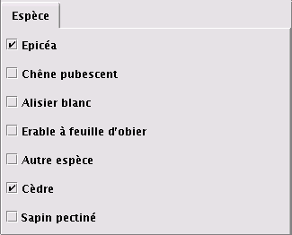

Sélection par variables qualitatives |
Aide Capsis |
Sélectionnez les individus d'intérêt en choisissant des valeurs pour leurs variables qualitatives.

Ex : Sélection des valeurs "Epicéa" OU "Cèdre" pour la variable qualitative "Espèce".
Si l'objet contient plus d'une variable qualitative, il est possible d'en paramétrer plusieurs ensemble.
Ex : (Espèce = "Epicéa" OU "Cèdre") ET (Statut = "Dominant" OU "Co-dominant")